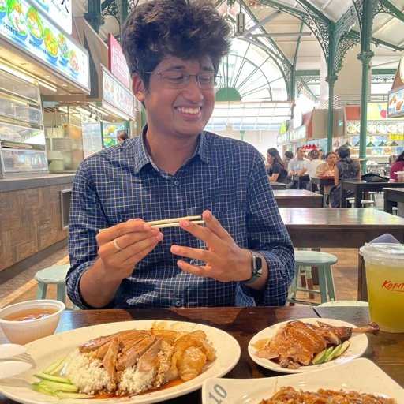

“Mayukh led the delivery of large-scale initiatives such as IDP 2.0, IDP Catalog, and the SSEM NAB prototype — which directly contributed to securing the $****** million deal.”

Hi, I'm Mayukh.
I've always been drawn to change — not just adapting to it, but dancing with it.
Whether it's rethinking a process or picking up a new skill, I find energy in the evolution. I thrive in teams that lead with heart and intention, where building ethically isn't a question, and where I can show up fully — not just as a teammate, but as myself.
Skills
Interaction & Product DesignVisual CommunicationResearchDesign Strategy
Tools
FigmaAdobe XDFramer
Senior Product Designer
Aurasell · Oct 2025 – Present
Designing the product at Aurasell.
Senior Product Designer
Harness · Mar 2022 – Oct 2025
Leading design for the Internal Developer Platform and Cloud Development Environments, and co-leading Chaos Engineering — the first product to test resiliency directly in CI/CD pipelines.
UX Designer, Intern
ChaosNative (later acquired by Harness) · Feb 2021 – Mar 2022
Open-source UX and UI design for Litmus, the free chaos-engineering platform now adopted by the Cloud Native Computing Foundation.
UX Engineer, Intern
MayaData (later acquired by DataCore) · Jul 2020 – Jan 2021
Built NPM components for Kubera and its modules, speeding up development and establishing a common design guideline across the product.
“Mayukh consistently brings bold, forward-thinking ideas that challenge convention.”
“Mayukh jumped in as a subject matter expert to help design and deliver the Chaos Engineering module and also helped shipping multiple Litmus projects. He's humble, proactive and always thinking of how we can improve on what we did yesterday.”
Kalinga Institute of Industrial Technology
Bachelor of Technology, Information Technology · 2018 – 2022
Grade: 9.5 / 10
Calcutta Public School (ISC)
Physics, Chemistry, Mathematics, Computer Science · 2016 – 2018
Grade: 89%. One of 30 students in the country to score 100% in Computer Science.